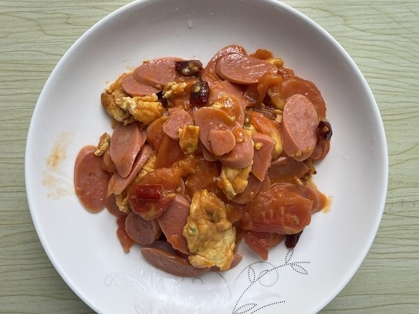
食材用料
| 食材 | 数量 |
|---|---|
| 番茄 | 250克 |
| 鸡蛋 | 两个 |
| 香肠 | 60克 |
| 油 | 适量 |
| 干辣椒 | 适量 |
| 盐 | 适量 |
| 冰糖 | 适量 |
做法步骤
| 图片 | 步骤 |
|---|---|
| 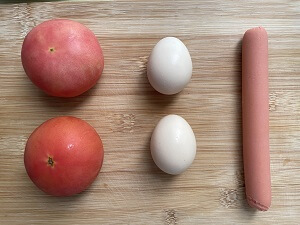 | 1. 准备食材 |
| 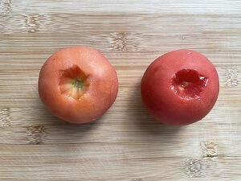 | 2. 番茄底部切掉，为了煮开的时候更好裂皮 |
| 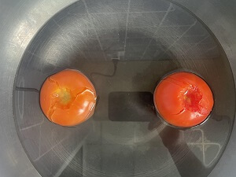 | 3. 开水煮到番茄表面裂皮 |
| 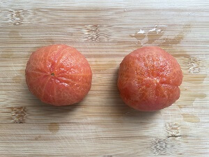 | 4. 番茄剥皮 |
| 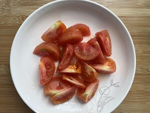 | 5. 番茄切成小块 |
| 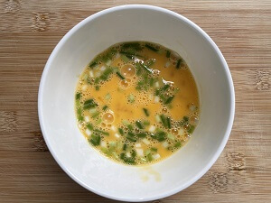 | 6. 打入鸡蛋、葱花搅拌 |
| 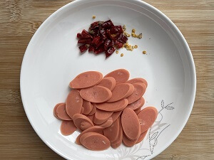 | 7. 香肠切片和辣椒装在一起 |
| 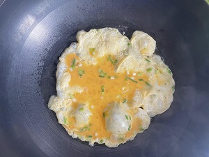 | 8. 热锅热油，油冒烟放入鸡蛋液 |
| 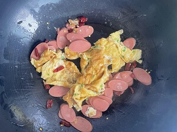 | 9. 放入香肠辣椒翻炒均匀 |
| 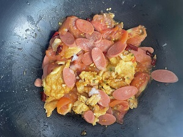 | 10. 放入番茄块翻炒均匀，放入盐（番茄块用锅铲摁烂） |
| 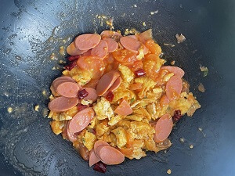 | 11. 收锅 |
| 12. 装盘 |